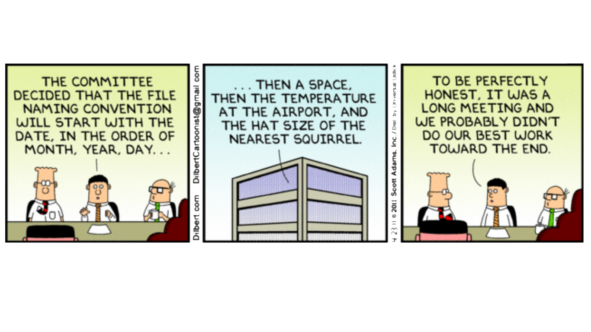
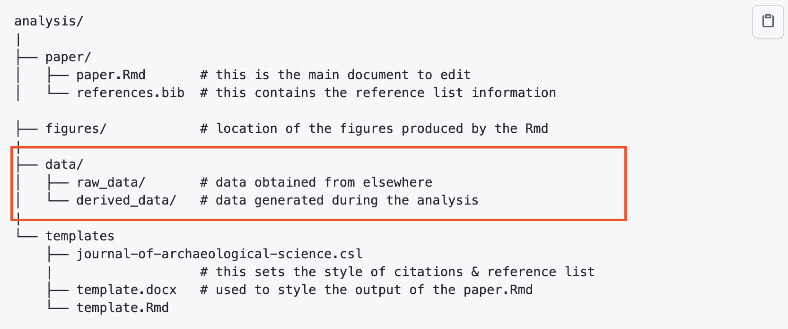

x <- 9.81 # gravitational acceleration
gravity_acc <- 9.81 # gravitational accelerationManaging data-driven projects as a team
Managing your files as a team
Our goal is to centralize the management of your files (data, codes, …). Try to avoid having data sets spread among laptops or other personal computers; this makes it difficult for other team members to redo a particular analysis and it can become difficult to know which version of the data was used for a specific analysis. We recommend asking your institution if there are servers or cloud services available to you and use those tools to centralize your data management. This will also make sure that all your collaborators will be able to access the same version of the data using the same path.
There are many tools out there to help with file management. Here are a few questions to ask your teammates when organizing your project:
- Can everybody have access to this tool? This should overrule the “best” tool => maximize adoption
- What team practices should you set on how to use these tools? Example: naming convention for files
- Allow flexibility – acknowledge the technological level varies among collaborators. Empower them by showing how to best use these tools rather than doing it for them!
Naming things

Develop naming conventions for files and folder:
- Avoid spaces (use underscores or dashes)
- Avoid punctuation or special characters
- Try to leverage alphabetical order (e.g. start with dates: 2020-05-08)
- Use descriptive naming (lite metadata)
- Use folders to structure/organize content
- Keep it simple
- Make it programmatically useful:
- Useful to select files (Wildcard *, regular expression)
- But don’t forget Humans need to read file names too!!
Quizz
Why do you think the second option would be best?
Which filename would be the most useful?
06-2020-08-sensor2-plot1.csv2020-05-08_light-sensor-1_plot-1.csvMeasurement 1.csv2020-05-08-light-sensor-1-plot-2.csv2020-05-08-windSensor1-plot3.csv
The most important is to make it consistent!
Good reference on this topic from Jenny Bryan (RStudio).
Organizing things
As we discussed previously, it is good practice to encapsulate your project and repositories are a good unit to start with. In this section we will talk about the case when your data sets start to be numerous or large enough that it is not possible anymore to keep them in your repository. Generally when you reach this amount of data to deal with, it also means that your personal computer might not be the best computer to efficiently process those data sets. Thus using a remote server (on premise or in the cloud) might become necessary.
Codes should be managed using version control (git and GitHub for this course) The repository should be stored in your home folder and the management of the different contributions should be resolved using git and GitHub and not by sharing directly the scripts. The main reason is that git does already the work for us by tracking the changes between the various versions, but also tracking which collaborator has made those changes and when.
Data sets should should be centralized in a shared folder that is available to all It is very rare in an Environmental Data Science project that you will discover all the data you need from the start. In addition, a lot of environmental data sets are time-series, and one year later might need to be updated as your project progresses. Our goal here is to setup ourselves in a way that will help us to avoid duplication of data. Every time you duplicate a data set (for example on your own laptop), there is a risk that at some point it will become its own version.
Code
Version control systems have been originally designed to track changes by rows in small text files, in other words they are well suited to manage codes. It is thus recommended to use them to track changes that you and your collaborators are making to the various scripts of your project. Mote on how to best do this in the section below.
Scripting languages
Compared to other programming languages (such as C, fortran, …), scripting languages are not required to be compiled to be executable. One consequence is that, generally, scripts will execute more slowly than a compiled executable program, because they need an interpreter. However, the more natural language oriented syntax of scripts make them easier to learn and use. In addition, numerous libraries are available to streamline scientific analysis.
Structure of a script
A script can be divided into several main sections. Each scripting language has its own syntax and style, but these main components are generally accepted:
From the top to the bottom of your script:
- Summary explaining the purpose of the script
- Attribution: authors, contributors, date of last update, contact info
- Import of external modules / packages
- Constant definitions (g = 9.81)
- Function definitions (ideally respecting the order in which they are called)
- Main code calling the different functions
A few programming practices that will help a long way
- Comment your code. This will allow you to inform your collaborators (but also your future self!) about the tasks your script accomplishes
- Use variables and constants instead of repeating values in different places of the code. This will let you update those values more easily
- Choose descriptive names for your variables and functions, not generic ones. If you store a list of files, do not use
xfor the variable name, use insteadfiles. Even better useinput_filesif you are listing the files you are importing. - Be consistent in terms of style (
input_files,inputFiles,…) used to name variables and functions. Just pick one and stick to it! keep it simple, stupid(KISS). Do not create overly complicated or nested statements. Break your tasks in several simple lines of code instead of embedding a lot of executions in one (complicated line). It will save you time while debugging and make your code more readable to others- Go modular! Break down tasks into small code fragments such as functions or code chunks. It will make your code reusable for you and others (if well documented). Keep functions simple; they should only implement one or few (related) tasks
Don’t Repeat Yourself(DRY). If you start copy/pasting part of your code changing a few parameters => write a function and call it several times with different parameters. Add flow control such as loops and conditions. It will be easier to debug, change and maintain- Test your code. Test your code against values you would expect or computed with another software. Try hedge cases, such as NA, negative values, ….
- Iterate with small steps, implement few changes at a time to your code. Test, fix, and move forward!
We hope this overview section about scientific programming has raised your interest in learning more about best practices and tools for developing reproducible workflows using scripting languages.
Notebooks and scripts
With the increasing popularity of notebooks in scientific projects, it can sometimes be confusing to know when to use one. The good news is that there is not really a wrong or right here and that actually both can be used in a complementary manner and each data scientist will have her/his preference. However here are a few tips to help you decide:
- Keep your Notebook at a length you will feel comfortable reading. It if starts to be a long it might be time to think about if some code could be move to another document (scripts or another notebook)
- Scripts might be better suited for tasks you need to rerun frequently
- If you have developed many functions for your analysis, it might be worth storing them in a script outside your main notebook
Data
It is recommended to keep the raw-data you are collecting separated from any data you might generate at various steps of your workflow. This will help you to trace back any problems, but also make your work more reproducible because you started your processing directly from the original data. There are different ways of ensuring this. A common one is to create a raw-data (sub)folder to store the data. You can even play with the file access settings to make those files read-only.
